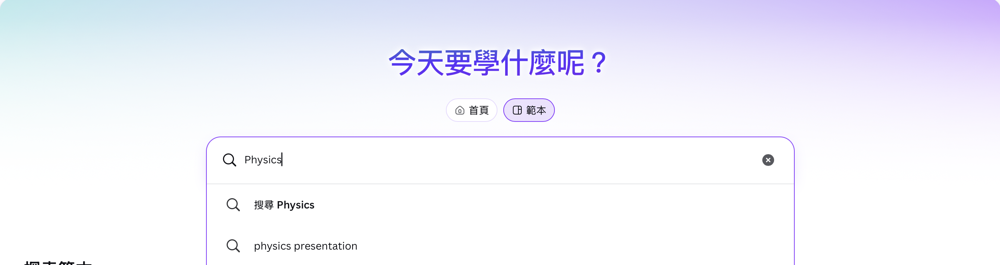
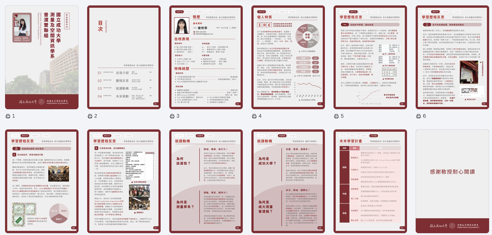
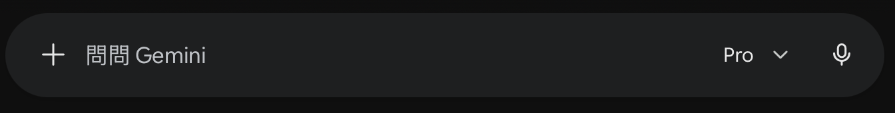

小蓮老師的簡易科技手冊 🎁
很高興能有這個機會，製作網頁向您簡易說明Canva軟體的操作及AI的使用。
面對日新月異的 AI 工具和設計軟體，您只要把 AI 想像成一個「剛畢業的熱血助理」，充滿熱情但需要給予適當指令才能得到期望的結果；把 Canva 想像成一個「幫您準備好半成品的設計百寶箱」，能夠快速套用模板省去設計時間，使用起來簡簡單單！
這份網頁手冊本身，就是我與 AI 合作出來的作品噢！程式碼外的文字幾乎都是Gemini的作品。您可以隨時透過點擊左側的目錄，查看不同主題的教學。
請放心地探索這份手冊，有任何問題，歡迎聯絡我或點擊左側目錄的「許願池與回饋」欄位留下任何疑問！我也會盡快回覆或更新網頁。
📌 如何使用這份手冊？
- 👈 點擊左邊的選單：可以隨時切換到您想看的單元。
- 🔽 點擊標題展開：教學內容採用摺疊設計，點擊標題就能展開詳細內容。
- 💡 直接複製貼上：在「AI Prompt 技巧」區，有很多AI為您寫好的「魔法指令」，可以直接複製貼上參考使用喔！
🎨 Canva 實戰教學：簡報與備審資料
Canva 就像是幫您準備好無數「半成品」的設計百寶箱，不需要從零開始，只要修修模板就能做出專業設計！
除了模板外也可以從空白頁面開始設計，Canva也是我在製作備審資料時的主要工具。
- 找對範本：在首頁搜尋列輸入關鍵字，例如「科技」、「環保」、「商業」或「開學」。

- 改字換圖：
- 改文字：對著畫面上的文字「點兩下」，就能直接打字替換。
- 換照片：從左側選單點擊「上傳」，把電腦裡的照片拉進去，然後「拖曳」到畫面中原有的圖片上，它就會像磁鐵一樣自動吸進去！
- 邀請共編：點擊右上角的「分享」>「新增使用者」>輸入對方電子郵件or「分享」>「複製連結」>提供連結給被邀請者。務必注意存取權！！
- 下載檔案：點擊右上角的「分享」>「下載」。
我最喜歡的功能！也是我的備審資料產出的地方。最適合生成履歷、NOPQ或三折頁！！因此下方以製作備審資料舉例
若要建立固定長寬比文件（以A4為例），在建立設計時，務必搜尋「A4 文件」或是「履歷」，這樣印出來或存成 PDF，比例才會正確。
- 圖表會說話：在左側找到「元素」>「圖表」。用長條圖或折線圖來呈現成績進步趨勢。
- 排版三大法則：
- 字體不過三：整份備審資料的字體種類不要超過三種。
- 大膽留白：適當的空白可以讓讀者的眼睛休息。
- 加入超連結：將文字或圖示設定為「連結」，點擊直接連到介紹影片或雲端硬碟！

讓您的簡報或備審資料更生動，您可以使用 Canva 內建的「元素」，或是把其他網站的內容、以前做的簡報直接「嵌入」進來！
別忘了學校帳號登入有提供教育版！！可以免費使用會員啦（差非！常！多！）
✨ 1. 加入圖示、線條與貼圖（元素功能）
- 尋找：點擊最左側邊欄的「元素」（長得像四個小形狀的圖示）。
- 精準搜尋：在搜尋框輸入關鍵字（例如：箭頭、書本、驚嘆號...）。
- 拖曳使用：看到喜歡的圖案，直接用滑鼠點擊或拖曳到畫布上。大部分的圖示點擊後，還可以在左上角自由更改顏色！
🔗 2. 鑲嵌（嵌入）外部文件或影音
想在簡報裡直接播放 YouTube 影片，或是放入 Google 表單，不用跳轉網頁，可以直接「鑲嵌」進來：
- 超快速貼上法：去 YouTube 或 Google 表單複製該網址，回到 Canva 畫布上，直接按鍵盤的
Ctrl + V（Mac 為Cmd + V）貼上。Canva 會自動施展魔法，把它變成一個可以互動的預覽方塊！ - 正規嵌入法：在左側邊欄滑到最下面點擊「應用程式」，搜尋「嵌入 (Embed)」。點擊後把網址貼進去，按下「新增至設計」即可。
鑲嵌進來的影片或表單，在您「編輯」的時候可能無法直接點擊互動（會變成調整大小）。但只要您點擊右上角的「呈現（播放簡報）」，它就會變成可以真實播放、填寫的元件喔！
🤖 AI 溝通術與 Prompt 技巧
把 AI 當成一個「聰明但需要明確指令的實習老師」。只要指令下得好，備課、發想活動都能事半功倍！
- R (Role 角色)：你要 AI 扮演誰？
- T (Task 任務)：你要 AI 做什麼？
- F (Format 格式)：你希望它怎麼呈現？
👆 點擊下方卡片翻轉看看！
「幫我弄個好笑的活動」
「你是一名醫學研究社的活動幹部，正在辦理迎新活動，請設計 3 個適合高中生、不需道具的 10 分鐘破冰遊戲。」
「幫我寫封信給家長說快段考了」
「請扮演班導師，寫一封300字的家長信，提醒下週段考並鼓勵家長陪伴，語氣溫暖專業。」
「解釋牛頓第三運動定律」
「請扮演高中物理老師，用生活中的情境（如游泳），向沒有基礎的學生解釋牛頓第三定律。」
- 去除贅詞： 電腦解讀指令中的每一個字都需要Token，為了節省能源與加速資訊處理，我們不需要對 AI 說「請、謝謝、麻煩你」，直接下達指令即可。
- 逆向工程： 如果不知道怎麼下指令，直接反問 AI：「我正在做一份活動企劃書，請協助我完成，你需要我提供什麼資訊？」
不知道怎麼寫指令？Gemini來幫你！請從下方選單挑選您的需求，點擊按鈕，機器人會幫您拼湊成完美的魔法指令！
- 切換進階模型： 使用 Gemini 時，請記得確認是否切換到 Gemini 教育版 Pro，邏輯推演和長文理解能力會大幅提升！


- 小心 AI 幻覺： AI 偶爾會一本正經地胡說八道。涉及法規、數據、或隱私時，務必發揮人類的專業進行事實查核。強烈推薦搜尋資料或文獻時在指令中加入「請確保資訊來源屬實」甚至是「請提供資訊來源（Reference）」
不同的 AI 工具有不同的專長，適才適所最重要：
🔍 Gemini
特色：結合 Google 生態系，找最新連網資料、整理時事新聞的最強幫手。
📚 NotebookLM
特色：專為閱讀長篇文章設計，主打「絕對不產生幻覺」。
適合情境：考前抱佛腳神器！可以把整份 PDF 教材、長篇論文或多篇講義丟給它。它只會根據您提供的資料回答問題，並會像做學術筆記一樣，告訴您答案來自第幾頁，可以製作重點摘要或選擇題測驗自己。
💬 ChatGPT
特色：最經典且普及的 AI。適合用來腦力激盪、日常對話，邏輯能力非常平均，生圖能力不錯。
✍️ Claude
特色：寫作語氣最自然、最像真人，適合寫長篇報告。原本設計來寫程式的，所以也是Coding最優秀的AI。
📬 許願池與回饋
如果您在操作上有遇到任何卡關，或者未來有想學其他新軟體，都歡迎隨時在這裡留言給我！
我很想豐富這個網頁，奈何不知道能放什麼內容，所以如果能告訴我大家會想學什麼就太棒啦！
只要按下送出，您的留言就會直接飛到我的信箱裡，我會盡快為您更新這份手冊！